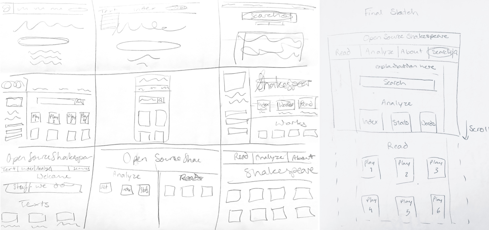
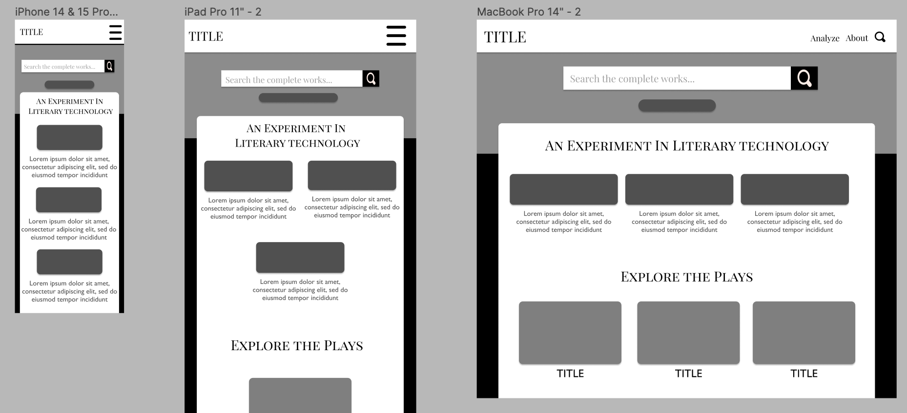
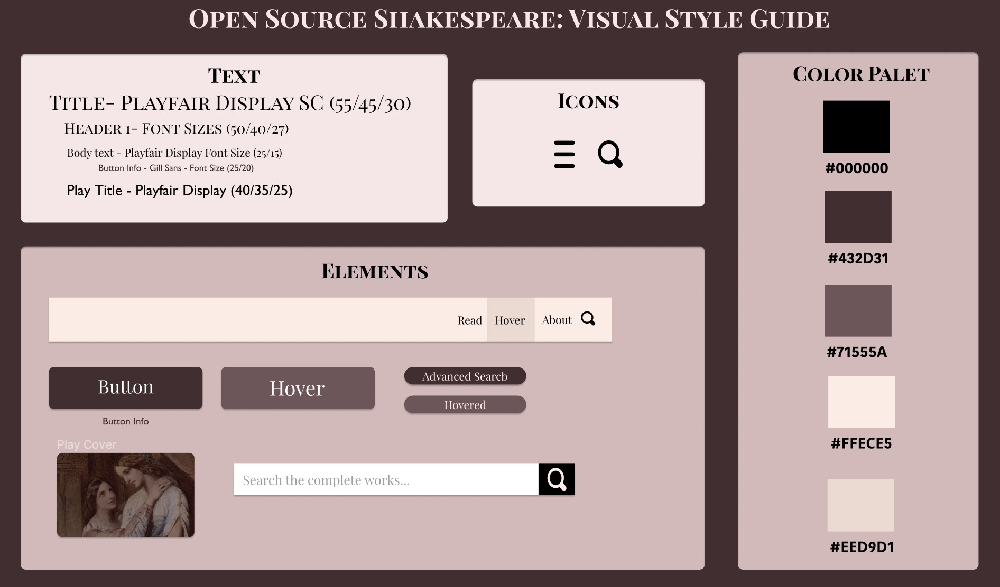
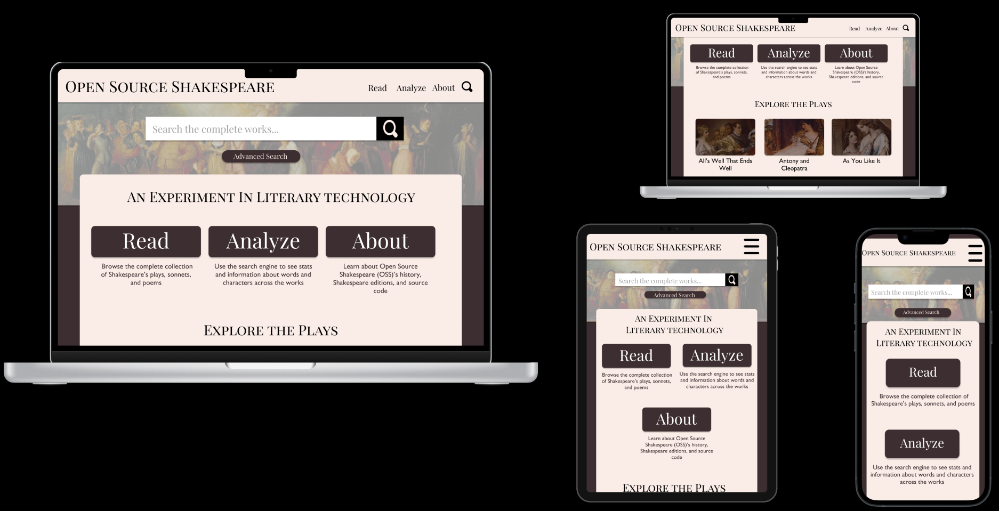
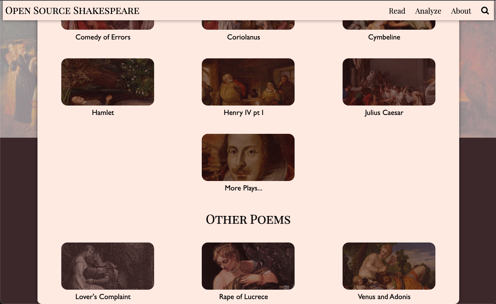
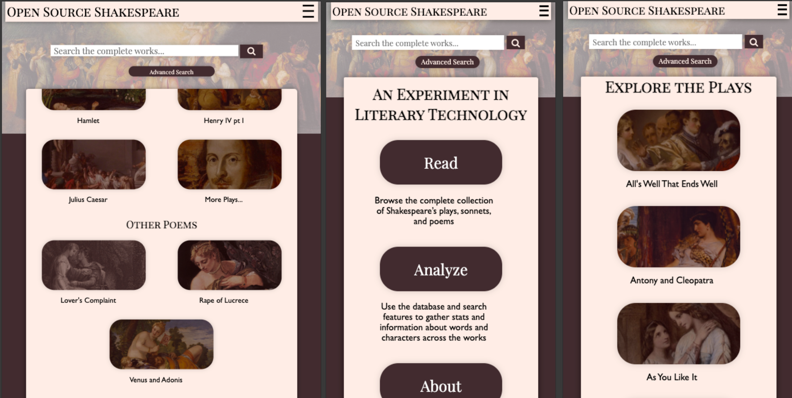

Open Source Shakespeare Redesign
Why OSS
I chose to redesign the Open Source Shakespeare (OSS) website because it has always been my favorite Shakespeare website and I’ve used it for both Shakespeare papers and productions. I love this site and care about increasing accessibility to books through digitizing them! I’m also passionate about the use of technology to analyze literature and the OSS database is an incredible resource for digital humanities. However, the interface itself is rather dated and unintuitive making it harder to use to its full potential.
The most significant problems with the site that I identified were difficulty of navigation, lack of responsive design, lack of accessibility labels and alternative text. Additionally the site felt crowded with unnecessary text, was difficult to learn and remember, and spacing would glitch when navigating through the interface.
The site has so many incredible features that are difficult to find and properly utilize due to the interface’s complexity. In my redesign I hoped to streamline the process of using the site while making it more aesthetic, accessible and adaptive to different device sizes.
I used software like Lighthouse and WebAIM to test for accessibility and create a more informed redesign. There are many instances where alternative and label text is missing. Additionally, certain elements are not marked as headers, there aren’t page regions and a layout table is used.
All of these things make it more difficult for screen readers to navigate the page. I also wanted to increase accessibility by using larger buttons rather than the small text links of the original to make the different resources easier to click.
Visual Redesign
Initial Sketches
For my visual redesign I started by drafting 9 rough sketches to brainstorm different layouts before combining the strongest elements into an final sketch which served as my base for the rest of redesign.
Low-Fidelity Wireframing
Using my rough sketch as a reference, I drew up annotated low-fidelity wireframes for the different devices sizes in order to plan out the responsive layout. I annotated the wireframes in order to communicate how these redesigns solved the problems with the original site that I had identified.
Style Guide
When creating my high-fi mockups I also compiled a visual style guide to centralize my different design elements.
High-Fidelity Mockup
While my Hi-Fi mockups are largely based on my sketches, I adjusted them slightly to maximize visual clarity and simplicity. I cut the text from above the search bar and instead moved it to the main text and content section. This allowed me to use the Shakespeare image as a background to the search bar and not worry about distracting from unecessary text.
Responsive Redesign
My final design created a more accessible interface that simplified the site's functions by condensing its different features while making it a responsive design.
While my site has fewer elements on the home page, this condensed approach creates a more natural flow and a less crowded page. The original page has seperate tabs for plays, sonnets, and poems, while I've grouped these under the "Read" tab. Similarly, I combine the Condorance, or index, and advanced search feature into the "Analyze" tab.
Breaking down these features into two distinct groups allows the user to be directed to the resources they need, whether those are the analyses functions provided by the database, or the original texts.
In my prototyped homepage, I didn't include the full range of works available or drop down menus, although these would be added if I were to built it out more.

